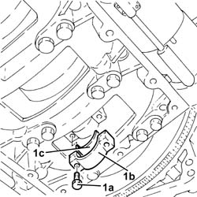
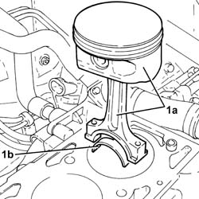
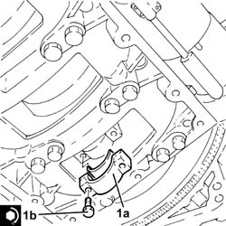

1028H10 CONNECTING ROD AND PISTON SET - R.R
- Path
- Procedures > 10 ENGINE > 1028 PISTONS AND CONNECTING RODS > 1028H PISTONS AND CONNECTING RODS > 1028H10 CONNECTING ROD AND PISTON SET - R.R
- Kind
- repair procedure (removal / refitting; the operation number is the code)
- Applies to
- engines: 1.8, 2.2, 2.4 JTD 20v; all production periods
- Interactive page
- https://sloeber94.github.io/elrnDB-fCrm/en/#/194000266
Applies to: engines: 2.2; all production periods
 Removing
Removing
 Refitting
Refitting- Position the vehicle on a lift.
- Make sure that the ignition key is in the OFF position, then disconnect the battery terminal (-).
Description | Connector | |
|---|---|---|
- | Battery |
Op. 4450B04 RIGHT FRONT WHEEL - R.R
Op. 7055B66 ENGINE COMPARTMENT DUST COVER IN RIGHT FRONT WHEEL ARCH - R.R.
Op. 1020A20 CRANKCASE OIL SUMP - R.R CLEAN SURFACES FOR SEALANT APPLICATION
Op. 7055B54 UNDER ENGINE PROTECTION/GUARD - R.R.
Op. 1016C10 SINGLE CYLINDER HEAD - R.R. AND REPLACE GASKET
- Mark the position of the connecting rod caps in relation to the connecting rods.
1. Undo the bolts (1a) and remove the connecting rod caps (1b) and half-bearings (1c).

Applies to: engines: 2.2; all production periods
- Push the connecting rods upwards so that the pistons are above the engine block.
1. Remove the piston-connecting rod assemblies (1a) and half-bearings (1b).

Applies to: engines: 2.2; all production periods
Refitting
Removing- Lubricate the half-bearings with engine oil and place them back in their housings on the connecting rods.
- Place the piston-connecting rod assemblies back in their housings using a suitable tool.
- Lubricate the connecting rod caps with engine oil and place them back in their housings on the connecting rods.
1. Place the connecting rod cap assemblies (1a) in their housings and secure them tightening the new bolts (1b) to the recommended torque using the angular tightening tool.
Component | Fastening | dia | Value (daNm) | Validity |
|---|---|---|---|---|
Connecting rod big end bearing caps | Bolt (to be replaced) | M9 x 1 | (connecting rod side) 2.5 + 50° + 50° + 15° | 2.2 |
Tool | Description | Function | Validity |
|---|---|---|---|
1860942000 | Torque wrench | Tighten bolts to torque plus angle |

Applies to: engines: 2.2; all production periods
Op. 1016C10 SINGLE CYLINDER HEAD - R.R. AND REPLACE GASKET
Op. 7055B54 UNDER ENGINE PROTECTION/GUARD - R.R.
Op. 1020A20 CRANKCASE OIL SUMP - R.R CLEAN SURFACES FOR SEALANT APPLICATION
Op. 7055B66 ENGINE COMPARTMENT DUST COVER IN RIGHT FRONT WHEEL ARCH - R.R.
Op. 4450B04 RIGHT FRONT WHEEL - R.R
- Connect the negative battery terminal.
Op. 0010T11 ENGINE OIL - CHECK LEVEL AND TOP UP, IF NECESSARY
Op. 0010T20 ENGINE COOLANT - CHANGE
- Remove the vehicle from the lift.
Applies to: engines: 2.4 JTD 20v; all production periods
- On this version it is not possible to remove/refit the pistons with the connecting rods on the car.
To perform this operation, remove/refit the power unit
Op. 1004B14 POWER UNIT WITH AUTOMATIC TRANSMISSION R + R
and then work at the bench, customising the engine service procedures for this operation.
Applies to: engines: 1.8; all production periods
- Refer to
Topics linked from this page (10)
- 0010T11 ENGINE OIL - CHECK LEVEL AND TOP UP, IF NECESSARY
- 0010T20 ENGINE COOLANT - CHANGE
- 1004B14 POWER UNIT WITH AUTOMATIC TRANSMISSION R + R
- 1016C10 SINGLE CYLINDER HEAD - R.R. AND REPLACE GASKET
- 1020A20 CRANKCASE OIL SUMP - R.R CLEAN SURFACES FOR SEALANT APPLICATION
- 1028H20 PISTON WITH CONNECTING ROD - R.R
- 4450B04 RIGHT FRONT WHEEL - R.R
- 7055B54 UNDER ENGINE PROTECTION/GUARD - R.R.
- 7055B66 ENGINE COMPARTMENT DUST COVER IN RIGHT FRONT WHEEL ARCH - R.R.
- A001 BATTERY